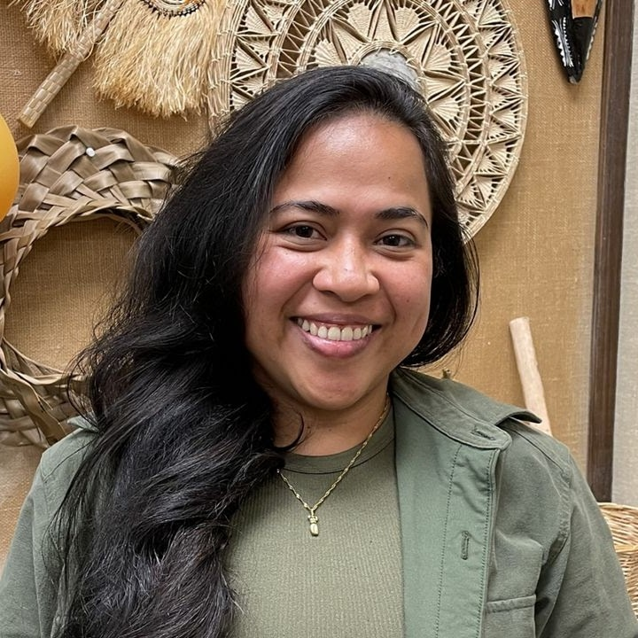
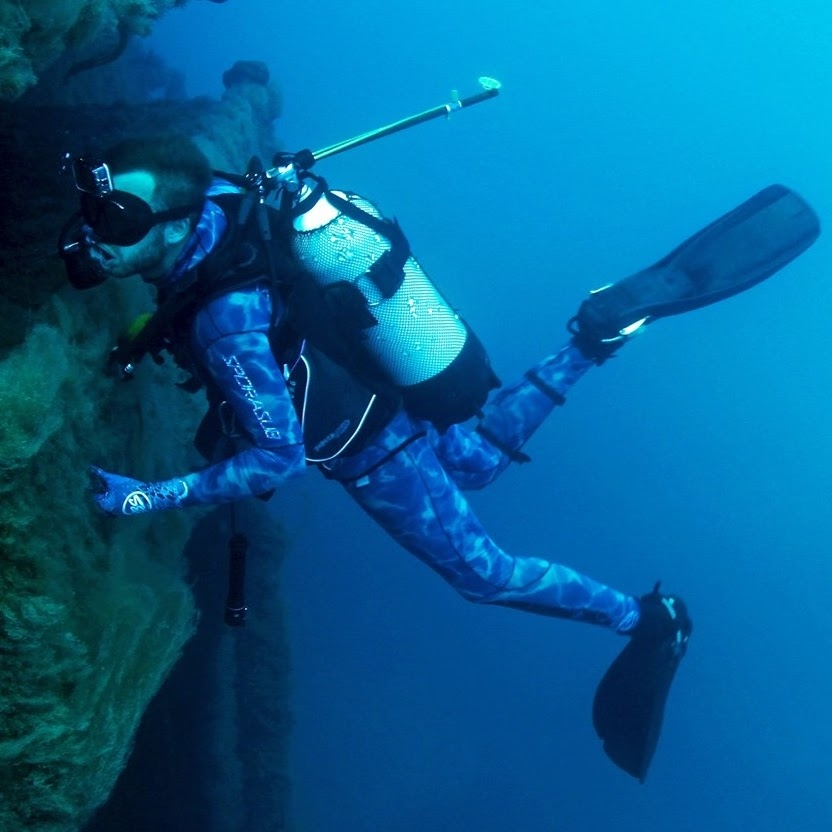

MA · Pacific Islands Studies
Carol Ann Carl
Rohrohwei (to bear onward): Oral histories as a biocultural literacy of ancestral seafaring knowledge
Graduated Dec 2025


MA · Pacific Islands Studies
Rohrohwei (to bear onward): Oral histories as a biocultural literacy of ancestral seafaring knowledge
MA · Pacific Islands Studies
Sacred Labor, Silent Knowledge: Roles, Responsibilities, and Challenges of Bouta (traditional undertakers) of Chiefly Funerals — A Study of the Naivisou Clan of Nakoroivau Village
MS · Marine Biology
Understanding the Movement, Habitat Use, and Ecology of Reef Manta Rays (Mobula alfredi) in the Yasawa Islands, Fiji
MA · Pacific Islands Studies
Caring for more than coral: Mapping coral reef restoration on Moorea, Māʻohi Nui (French Polynesia)
MA · Pacific Islands Studies
Security Cooperations in the Pacific Islands: A Case Study on Fiji
PhD · Environmental Biology
Blue Carbon, Governance, and Colonial Ecologies in Coastal Fiji
State University of New York, U.S.

PhD · Marine Science
Ecosystem-Based Fisheries Management in Remote Pacific Island Communities
University of the South Pacific, Fiji
PhD · Anthropology
Tides of Tradition: Measuring storytelling styles around fishing techniques, marine foraging, and cultural knowledge transmission
University of Utah, U.S.
PhD · Psychology
Indigenous Fijian Worldviews and Resilience in Community-Owned Businesses
University of the South Pacific, Fiji